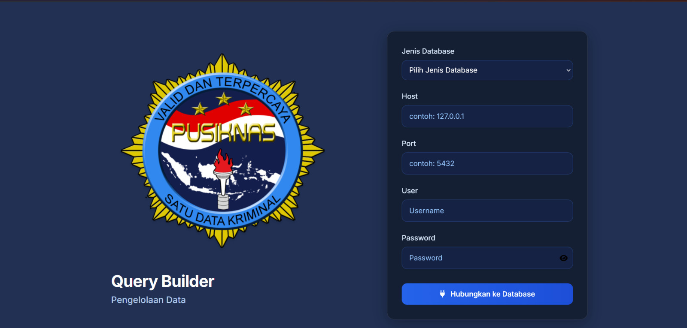

PROJECT 01 · INTERNAL APPLICATIONDatabase Query Builder & Reporting Dashboard
Contributed to an internal web application for exploring databases and streamlining operational reporting across PostgreSQL, MySQL, and Microsoft SQL Server.
- Built database browsing features for tables, records, schema relationships, pagination, and sorting.
- Developed a visual JOIN query builder with selectable columns, join types, filters, ordering, and pagination, alongside table search and raw SELECT queries.
- Integrated operational reports, including SPPT-TI integration reports and date-range summaries, with CSV and Excel exports.
- Worked on the application's login and OTP verification flow.